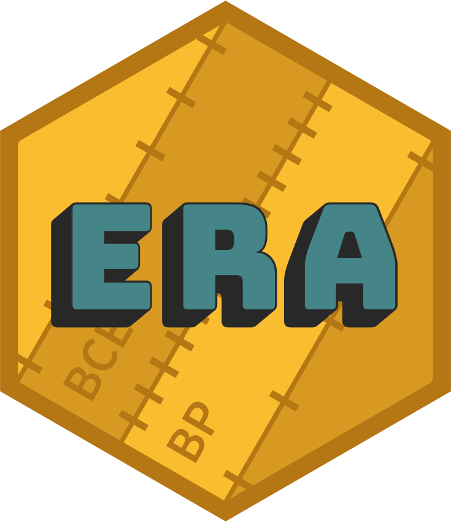

era 
era is an R package that provides a consistent representation of year-based time scales as a numeric vector with an associated era – the yr class.
It includes built-in era definitions for many year numbering systems used in contemporary and historic calendars (e.g. Common Era, Islamic ‘Hijri’ years); year-based time scales used in archaeology, astronomy, geology, and other palaeosciences (e.g. Before Present, SI-prefixed annus); and support for arbitrary user-defined eras. Years can converted from any one era to another using the generalised transformation function yr_transform().
era’s classes are based on vctrs, and come with methods for robust casting and coercion between years and other numeric types, type-stable arithmetic with years, and pretty-printing in tables.
Installation
You can install the released version of era from CRAN with:
install.packages("era")Or the development version from GitHub with:
# install.packages("devtools")
devtools::install_github("joeroe/era")Basic usage
yr() defines the era associated with a vector of years:
library(era)
x <- yr(c(9000, 8000, 7000), "cal BP")
x
#> # cal BP years <yr[3]>:
#> [1] 9000 8000 7000
#> # Era: Before Present (cal BP): Gregorian years (365.2425 days), counted backwards from 1950Use yr_transform() to convert between eras:
yr_transform(x, "BCE")
#> # BCE years <yr[3]>:
#> [1] 7050 6050 5050
#> # Era: Before Common Era (BCE): Gregorian years (365.2425 days), counted backwards from 0Many common calendar systems and time scales are predefined (see ?eras()) and can be referenced by their abbreviated labels. Other eras can be defined using the era() function directly.
For further usage, see the package introduction (vignette("era")).